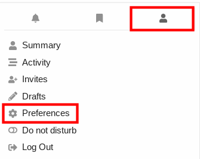
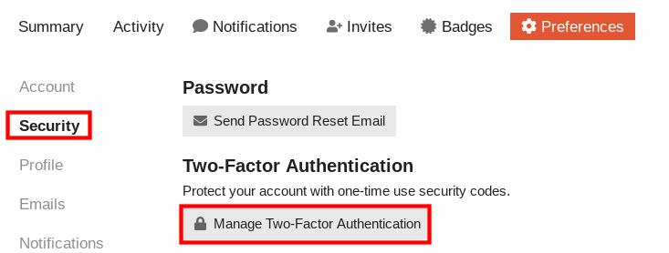
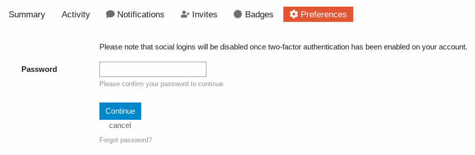
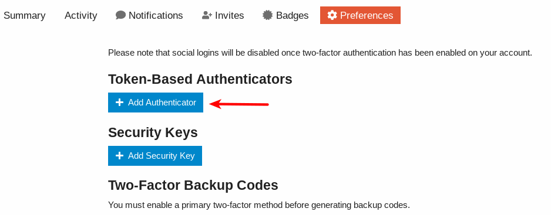
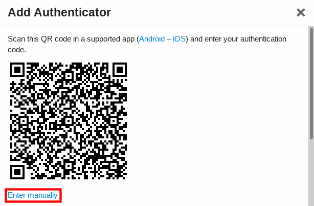
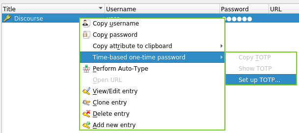
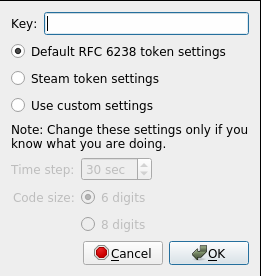
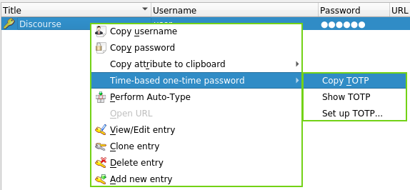
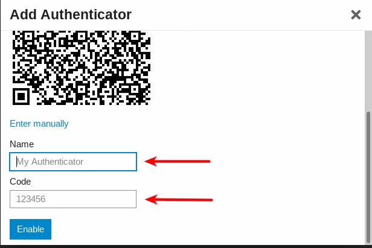

{kind=link}
We believe security software like Kicksecure needs to remain Open Source and independent. Would you help sustain and grow the project? Learn more about our 14 year success story and maybe DONATE!
Disable TCP and ICMP TimestampsDocumentationRAMPrevious page: Disable TCP and ICMP TimestampsIndex page: DocumentationNext page: RAMTwo-factor Authentication (2FA)
How novice and advanced users can benefit from Two-factor Authentication (2FA). Avoiding inaccessible online accounts/logins. Time-based One-time Password (TOTP). "Google Authenticator." Universal Second Factor (U2F) security/physical keys.
Introduction
 You are your email address! If an email address is hacked, the attacker
can potentially take over most of your digital identity. This can lead
to impersonation on social media and forums, the depletion of
banking/credit/shopping accounts, access to cloud storage services or
password managers, and more.
You are your email address! If an email address is hacked, the attacker
can potentially take over most of your digital identity. This can lead
to impersonation on social media and forums, the depletion of
banking/credit/shopping accounts, access to cloud storage services or
password managers, and more.
 2FA is beneficial even for advanced users that have the capability to
easily detect phishing attempts. The reason is email addresses used for
(financial) service sign-up can be hacked due to factors outside of an
individual's control, such as database leaks, malicious insiders and so
on. In that case 2FA will still afford protection to accounts.
2FA is beneficial even for advanced users that have the capability to
easily detect phishing attempts. The reason is email addresses used for
(financial) service sign-up can be hacked due to factors outside of an
individual's control, such as database leaks, malicious insiders and so
on. In that case 2FA will still afford protection to accounts.
Definition
Even users who are knowledgeable about (spear) phishing can benefit from two-factor authentication (2FA). 2FA and similar terms are encompassed under the broader multi-factor authentication (MFA) definition: [1]
Multi-factor authentication ... is an electronic authentication method in which a user is granted access to a website or application only after successfully presenting two or more pieces of evidence (or factors) to an authentication mechanism: knowledge (something only the user knows), possession (something only the user has), and inherence (something only the user is). MFA protects user data--which may include personal identification or financial assets--from being accessed by an unauthorised third party that may have been able to discover, for example, a single password.
2FA can be used to strengthen the security of online accounts, smartphones, web services, access to physical locations and other implementations. By requiring two (or more) separate and distinct forms of information/identification before secure access is granted to something, this minimizes the threat posed by malicious actors. 2FA relies upon a combination of two of the following: [2]
- something you know -- like a password
- something you have -- like a code sent to a smartphone or smartphone authenticator application
- something you are -- such as biometric markers (fingerprints, face or retina scans)
A familiar example of 2FA is the withdrawal of money from an Automatic Teller Machine (ATM). To withdraw cash it is necessary to present a valid credit or debit card (something you have), and to enter a Personal Identification Number (PIN; something you know) for a successful transaction. Although this increases overall security, this procedure is vulnerable to attacks such as ATM skimming. [3] [4]
2FA is not foolproof because hackers can potentially access these authentication factors via malware, account recovery procedures, phishing attacks, browser vulnerabilities and Man-in-the-middle Attacks. It is also possible to intercept text messages that are sent as part of a 2FA procedure. This is why MFA is more secure than 2FA -- more than two factors are required before account access is granted.
Digital Identity
Consider what would happen if:
- you immediately lost access to your email address
- a malicious third party had exclusive access to your email address while you did not
These hypothetical scenarios reinforce that a digital identity is centered around the inviolability (security) of personal email addresses. For many purposes, it's a trust anchor. Malicious actors who control your email address also have major control over most of your digital life. As noted in the Essential Security Guide Introduction chapter:
Just one breach of an online email service permits the theft of valuable personal data, account/contact harvesting, re-sale of retail accounts, spam and much more. An email account is a particularly weak link, since once under the attacker's control they can reset the password, along with the passwords of many linked services and accounts.
Feasible consequences of an email breach include: [5] [6]
- Employment: forwarding of work documents and work email; access to Fedex, UPS, Salesforce or related accounts; employer/colleague details; a hack of the victim's employer; and sending a termination letter to an employer, employees, landlord, mobile carrier, banks etc.
- Financial: access to bank accounts; reset of accounts for malicious transactions; financial accounts/loans made in the victim's name; email account ransom; personal credit score harm; changed billing arrangements; cyberheist lures; and blackmail/extortion opportunities against the owner of the hacked account.
- Harvesting: all email and chat contacts; access to file hosting accounts; Google Docs, MS Drive, Dropbox and other accounts; software license keys; social security number and other information for identity theft; and password recovery requests to all social media and other accounts. [7]
- Privacy: access to personal name and history; personal messages, calendar, photos, Google/Skype chats; call records (plus mobile account); your location (plus mobile/i-Tunes); names of friends and family members; the threat of real-world stalking; and potentially political views, travel and favorite places.
- Spam: commercial email; phishing; malware proliferation; stranded abroad, email signature and Facebook/Twitter scams; and other malicious emails/messages requesting funds/cryptocurrency transfers to help "solve" non-existent scenarios.
- Reputation: reputational harm due to uploading of indecent communications, photos, videos to social media/other websites; sending of inappropriate e-mails; and catfishing romantic partners. [8]
- Retail Resale: Facebook, Twitter, Tumbler, Macys, Amazon, Walmart, i-Tunes, Skype, Bestbuy, Spotify, Hulu+, Netflix, Origin, Steam, Crossfire and other accounts.
The multiple, serious consequences of an email breach emphasize the importance of properly configuring 2FA for both accounts and password managers to minimize the potential damage. It is also recommended to:
- use strong and unique passwords for all accounts
- avoid the use of email accounts as a login for other accounts
- limit information shared over email
- avoid typing your email password on public WiFi networks
Common Misconceptions
Misconception |
Description |
|---|---|
2FA requires Google |
Google authenticator is the most popular 2FA implementation, but not the only one -- Google software is not necessary to take advantage of 2FA. Many services link to and recommend Google authenticator, but any Time-based One-time Password (TOTP) implementation will work, see: Software Choices. |
2FA is a quick fix to protect against future breaches |
Sites cannot simply "turn on" 2FA; deployment requires tokens to be issued or cryptographic keys embedded in other devices. If 2FA is deployed, many users will not have the means to log in, or if it is voluntary, some will not bother enabling this security feature. |
2FA is invulnerable to most threats |
2FA does improve security but it is imperfect. For example:
|
2FA always requires the use of a second device |
Single device 2FA is possible, for example keying information with a smartphone application that prompts the user for something they know. This means a second device is not needed to receive one-time passwords. |
Most 2FA solutions are similar |
This is incorrect. 2FA solutions can rely on hardware tokens that produce one-time passwords, emails, SMS messages, mobile applications with cryptographic secrets (like Google Authenticator, Defender Soft Token etc.), keying information stored in a user's browser, physical security keys (like a Nitrokey) and so on. |
2FA is unnecessary; strong and unique passwords are sufficient |
As noted in the introduction, this is demonstrably false. For example, phishing attacks, browser vulnerabilities and Man-in-the-middle Attacks can lead to the recovery of passwords. 2FA is recommended for all accounts -- even your password manager -- for an extra layer of security. This way hackers need to overcome two barriers instead of one to access an account. |
All 2FA is equally strong |
This is incorrect. For example, SMS and mobile authenticator applications are vulnerable to SIM swapping, mobile malware, phishing scams, and Man-in-the-middle Attacks. On the other hand, Google researchers found that no users relying exclusively on physical security keys were victims of targeted phishing campaigns (since physical key access is required to log in). [15] [16] |
2FA is complicated and time-consuming |
The right 2FA solution for a user's security needs can be simple to use, and does not always involve using one-time passwords. For example, a physical security key may only require one touch or tap of the key to log in. |
2FA requires an Internet connection |
This is incorrect. For example the TOTP authentication mechanism does not require an Internet connection. |
TOTP and HMAC-based One-Time Passwords (HOTP) are identical |
TOTP and HOTP are distinct:
|
2FA Configuration and Options
Before configuring 2FA for online accounts, it is worth considering the most common methods in use by websites, the relative strengths and weaknesses of each implementation, and various configuration options.
Depending on the website, more than one 2FA method may be available. 2FA may also be referred to as "login verification" (Twitter), "login approvals" (Facebook), "SafePass" (Bank of America), "2-step verification" (Google and others). Most popular websites provide 2FA -- the Electronic Frontier Foundation (EFF) provides detailed guides for the following services: [17]
For a comprehensive list of services and websites that support 2FA, utilize 2FA Directory.
Implementations
2FA implementations can take several forms, including: [17]
- a one-time verification code sent via SMS
- a TOTP generated by dedicated applications like Google Authenticator, Authy and FreeOTP
- downloadable, printable, hardcopy backup codes
- hardware tokens such as a Nitrokey
As outlined in the introduction, all these methods are verifying something you have (a smartphone, printed out codes, a piece of hardware) with something you know (your password). Each method has strengths and weakness as outlined in the table below. In general, while SMS verification is the most common 2FA method, it is not recommended because SMS messages can be intercepted in transit by malicious actors. Conversely, hardware tokens like Nitrokey are the most secure method, but are not widely supported and could be lost. Authenticator applications are a reasonably secure middle ground, so long as you possess a smartphone.
2FA Implementation |
Pros and Cons |
|---|---|
FIDO U2F / physical keys (recommended) [21] |
Pros:
Cons:
|
Authenticator application / TOTP 2FA (recommended) [23] |
Pros:
Cons:
|
Push-based 2FA (recommended) [26] |
Pros:
Cons:
|
SMS-based text messages and voice-based 2FA (unrecommended) [28] |
Pros:
Cons:
|
Biometric IDs (unrecommended) |
Pros:
Cons:
|
Email-based 2FA (unrecommended) |
Pros:
Cons:
|
Backups
Users tend to not backup 2FA backup codes since (popular) services do not enforce this procedure. [33] After configuring 2FA, it is strongly recommended to plan for the worst case scenario and have multiple 2FA backup codes. Otherwise account access will be lost if a smartphone is lost/stolen, or if a single copy of 2FA backup codes is misplaced.
Recommendations: [34] [35] [36]
- Always set up at least two devices which can generate 2FA one-time
passwords.
- For example, open the 2FA page of the relevant website. Next scan the QR code with the authenticator application on the first phone, then scan the same code with the authenticator application on the second phone.
- Always backup, print or write down 2FA backup codes in two different places -- these cannot be hacked or compromised without somebody breaking into your home. [37]
- Additional copies of 2FA backup codes can be stored in other
locations:
- In an encrypted file on your computer (including snapshots of QR codes).
- In cloud storage if the option is available. [38] This is less secure but more convenient -- if a smartphone is lost all codes can be easily restored without re-scanning all the sites again.
- If services do not provide 2FA code backup options (like Apple), one workaround is to add a second, trusted phone number for the accounts, such as a spouse's phone, work phone etc.
Note: a common misconception is Google 2FA backup login codes cannot restore 2FA for services other than Google. This is incorrect, these codes allow logins into a Google account after having lost access to the 2FA device.
Authenticator Software Choices
Various factors should be considered before choosing an authenticator application, including: [39]
- Price: prefer those which are free [40]
- Offline access: better applications do not require an Internet connection to generate codes [41]
- Open source: prefer open source code authenticators [42]
- Password protection: since authenticator applications protect security, preferably it can be locked with a PIN, passcode or similar
- Biometric lock: depending on your circumstances this might be suitable - it is then unnecessary to remember a password
- Backup/restore functions: good software should allow for secure backups of security codes and easy restoration
- Autofill and autologin: for convenience, some applications can automatically enter TOTP codes and log in to accounts
- Import entries: some authenticators allow the importing of previous entries in another product
- Export entries: this is useful if switching to another authenticator
- User interface: this should be simple for setup, use and access
- Other security options: the ability to change TOTP intervals and code length is useful
- Desktop application: some software has this option - a mobile phone is not necessary for codes
- Multi-device sync: syncing to laptops, mobiles, PCs etc. is a useful functionality
- Password manager: some authenticators allow login credentials to also be stored for convenience
While all of these features are useful, the strongest preference should be given to free and open source products. Therefore, while Google Authenticator is the most popular product on the market, it is non-freedom software and does not have a backup function; it is unrecommended for these reasons.
KeePassXC can be considered as a replacement for Google Authenticator on desktop computers such as Windows, Qubes OS (recommended), Linux (recommended) or macOS. It is also functional in an offline virtual machine (VM). Other possible options are outlined in the table below, although this is not a complete list; proper research should be conducted beforehand.
Software |
Pros |
Cons |
|---|---|---|
|
|
|
|
|
|
|
|
|
|
|
|
|
|
|
|
|
|
|
|
|
Other Factors
As noted in the previous section comparing common authenticator software, TOTP is the most commonly supported protocol; only a handful of free and open source alternatives support HOTP as well. As a reminder, prefer free and open source applications, even though Google dominates the market. [47]
With respect to U2F hardware options that authenticate by using unique hardware tokens, Nitrokey is considered the best option. Nitrokey supports HOTP, TOTP and U2F. It also supports multiple connection options (USB-C, USB-A and Lightning) and can be used with most online services. It is virtually phishing-proof because the tokens are directly bound to the destination website/service. [48] Other options like Kensington VeriMark USB and Google Titan Security Key are unrecommended because they rely upon Windows devices and have limited functionality compared to Nitrokey, such as only supporting U2F and not other protocols; far fewer services support U2F compared to TOTP.
For reasons of practicality, most users will prefer to utilize software authenticators relying upon TOTP when accessing real-life, non-anonymous accounts. For instance, bank accounts can be better secured via TOTP generation on multiple, non-anonymous devices such as Android and iPhone devices.
Further reading:
Warnings
Threat Model
2FA Protection Level |
Description |
|---|---|
Full protection |
2FA is effective when:
|
Partial protection |
2FA might work when:
|
Ineffective protection |
2FA is ineffective if:
|
Security Issues
In general, 2FA increases the difficulty of being hacked and it is considered the best practice for keeping accounts and systems secure. Users with higher security needs can employ MFA -- three or more levels of authentication -- to further decrease the chances of a successful attack. As noted in the Implementations section, it is safest to rely on FIDO U2F / physical keys or if that is unavailable, authenticator applications / TOTP 2FA or push-based 2FA. All other methods are unrecommended.
It is worth reiterating that SMS-based 2FA should be avoided due to the risk of SIM Swap Scams and malicious SMS re-routing as mentioned on the Mobile Phone Security wiki page. Although SMS and automated phone calls with one-time codes remain a popular 2FA method, there are many examples where hackers tricked mobile phone carriers into transferring somebody else's phone to their own; they then have access to authentication for that phone number. [20] Another related risk is the rise of automated bots that call users and request MFA codes or one-time passwords to "prevent fraud" on various accounts. [51]
For example, in 2019 the Twitter CEO had his account hacked while using a 2FA method. Around the same time, over 23 million YouTube users utilizing 2FA were hacked because a reverse proxy toolkit was built to intercept 2FA SMS codes. Similarly, the Binance cryptocurrency exchange had their 2FA system compromised and lost tens of millions in the process. These hacks reinforce the risk of SIM-swaps for 2FA; hackers use various methods to change a victim's phone number so that subsequent messages or phone calls are redirected to a new phone. All in all, SMS and phone call-based 2FA systems have too many weaknesses to warrant its recommendation. [20]
Historically, other 2FA breaches have resulted from malware compromises. For example in 2020 an authenticator application in Android was discovered to be malware, stealing 2FA codes in the process. TrickBot malware is another example where one-time codes utilized by banking applications (sent via SMS/push notifications) have been intercepted. Finally, social engineering situations can emerge whereby hackers contact targets and pose as the bank or other service, requesting the security code that was just sent to "confirm their identity." [20]
Anonymity Issues
Users risk possible de-anonymization if using the following applications on a non-torified device:
- Authy requires an Internet connection.
- Symantec VIP requires an Internet connection.
- Google Authenticator did not use the Internet at the time of writing, but this might change with an (automatic) update.
If anonymity is required, it is strongly recommended to only run 2FA software in non-networked or torified machines.
Practical 2FA Example
 A 2FA setup for Discourse and KeePassXC (an open-source password
manager) is shown in the following example. 2FA implementations are
possible for a wide range of other web services, SSH logins and
more.
A 2FA setup for Discourse and KeePassXC (an open-source password
manager) is shown in the following example. 2FA implementations are
possible for a wide range of other web services, SSH logins and
more.
1. Navigate to Discourse preferences.

2. Click on Security →
Manage Two-Factor Authentication

3. Enter your password →
Click Continue

4. Click on Add Authenticator

5. Select Enter manually →
Take a copy of the QR code

6. Open KeePassXC →
Right-click on the Discourse account →
Select Time-based one-time password →
Set up TOTP...

7.
Add the QR code in the empty Key field →
Click OK

8. Select Copy TOTP; new keys are
regenerated every 30 seconds.

9.
Add your username to My Authenticator →
Add the generated TOTP to Code →
Click Enable

Readers are welcome to add further practical examples of 2FA to this section.
Debian Packages
Recommended
- libpam-google-authenticator:
The Google Authenticator project has implementations of one-time
passcode generators for several mobile platforms, as well as a PAM. By
default, the configuration is interactive, but there are command-line
options that allow non-interactive usage (except not overwriting the
file
~/.google_authenticator, which requires interactive confirmation to avoid it, but the-foption can be used to force it). Writing to this file makes sense as a PAM module but doesn't make sense if you just want to use the software to generate new (H|T)OTP. Creates a QR code by default (can be disabled), which makes sense when the second authenticator is a smartphone. It allows configuring plenty of options, such as rate-limiting, refresh interval, number of emergency codes, label, issuer, etc. [52] - libpam-oath:
Open AuTHentication (OATH) Toolkit libpam_oath PAM module. The
documentation is compressed by default; after decompressing
/usr/share/doc/libpam-oath/README.gz, it was possible to better understand it. This library seems fine for use with PAM, but to use it requires the non-suggested package oathtool, which has a lot of options. However, there is a major downside: the key must be generated via other means and provided to the program (stdin or parameter) instead of being generated by the program. Because of this, it is not recommended for non-expert users. [53] - libpam-otpw: OTPW for PAM authentication. This is only for PAM; the CLI tool is otpw-gen. Development was done before 2007 and 2017. The major downside is the protocol, which is OTP, so the secret is something the user has to remember. [54]
- otpclient is a simple GTK+ software to generate TOTP and HOTP. It also has a otpclient-cli version. Bonus points for having a GUI. It can read the configuration from a webcam, QR code from file or clipboard, or be entered manually. Although it calls itself a generator of OTPs (it does that), it can be somewhat confusing as it doesn't generate the secret itself, but is only able to import said secret to the client to show (generate) the one-time passcodes.
- otp is a generator for One-Time Pads or passwords. It is very simple and has some options, but by itself, requires a specific use case for it.
Smartcard
- libpam-p11: A PAM module for using PKCS#11 smart cards. If you need CA, CRL, or OCSP, use libpam-pkcs11. Active development.
- libpam-poldi: A PAM module allowing authentication using an OpenPGP smartcard. Because the protocol is OpenPGP, it is compatible with many smartcards on the market. Produced by the same team from GnuPG. It does not play nice with a running scdaemon; there are workarounds, and the report is old, so it might be fixed already. [55]
- libpam-yubico: Two-factor password and YubiKey OTP PAM module. The protocol is HOTP; this is common for non-networked smartcards.
- libpam-fprintd: A PAM module for fingerprint authentication through fprintd. Fingerprint readers normally reside on the host and have no utility on a virtual machine.
Drop
- libpam-barada:
Pluggable authentication module (PAM) to provide two-factor
authentication based on HMAC-Based One-Time Password (HOTP). Last code
update was before 2010;
after the initial package release, there were only packaging fixes. No
outstanding open bugs, just a few bug reports from more than a decade
ago (2014), so development has stopped. Requires superuser privileges
just to create the code, as it saves information in
/etc/barada.d/and not in$HOME. Use case seems to be tightly coupled with PAM, as HOTP needs something to increase the counter. Does not generate a QR code by default. Documentation is scarce, no manual page (docs can be found in/usr/share/doc/libpam-barada/README.debian). There are no configuration options besides the minimum necessary: user name and PIN number.barada-adddoes not show emergency codes. Generates the secret in hexadecimal; most clients would prefer it in Base32, but it can be converted using other tools. - libpam-blue: PAM module for local authentication with Bluetooth devices. This module is not present in stable (bookworm) anymore.
See also
- Debian wiki: Fingerprint authentication
- FIDO2 or CTAP in Qubes.
- YubiKey:
- Qubes wiki: YubiKey
- The Qubes' YubiKey package for configuring YubiKey login support could be ported to Debian.
Note: Kicksecure
is an Implementation of the Securing Debian Manual.
Specifically the feature you're reading about here is inspired by this
chapter in the manual: Password
security in
PAM
See Also
- Phone Number Validation vs User Privacy
- Mobile Phone Security
Footnotes
- https://en.wikipedia.org/wiki/Multi-factor_authentication
- https://www.investopedia.com/terms/t/twofactor-authentication-2fa.asp
- In this attack:
- ATM skimmer devices usually fit over the original card reader. * Some ATM skimmers are inserted in the card reader, placed in the terminal, or situated along exposed cables. * Pinhole cameras installed on ATMs record a customer entering their PIN. Pinhole camera placement varies widely. * In some cases, keypad overlays are used instead of pinhole cameras to records PINs. Keypad overlays record a customer's keystrokes. * Skimming devices store data to be downloaded or wirelessly transferred later.
- https://pixelprivacy.com/resources/two-factor-authentication/
- https://www.rd.com/list/what-hackers-can-do-with-email-address/
- https://krebsonsecurity.com/2013/06/the-value-of-a-hacked-email-account/
- Password recovery may not even be necessary because many Internet users tend to use the same passwords for multiple accounts.
- A catfish is someone masquerading as somebody else to create false identities, often to pursue deceptive online romances.
- https://www.wired.com/insights/2013/04/five-myths-of-two-factor-authentication-and-the-reality/
- https://web.archive.org/web/20201108134652/https://thecybersecurityplace.com/6-myths-about-two-factor-authentication/
- https://www.stuff.co.nz/business/opinion-analysis/300221352/3-common-misconceptions-about-twofactor-authentication
- https://www.yubico.com/blog/internet-security-myth-busters-debunking-3-common-misconceptions-about-two-factor-authentication/
- See also: 2FA's costly misnomers and misconceptions.
- https://kripeshadwani.com/best-2fa-apps/
- https://security.googleblog.com/2019/05/new-research-how-effective-is-basic.html
- Device-based challenges like SMS codes, security keys and on-device prompts were generally more effective against automated bots, bulk phishing attacks, and targeted phishing attacks. Less useful were knowledge-based challenges like a secondary email address, phone number, or last sign-in location.
- https://www.eff.org/deeplinks/2016/12/12-days-2fa-how-enable-two-factor-authentication-your-online-accounts
- https://www.accessnow.org/cms/assets/uploads/2017/09/Choose-the-Best-MFA-for-you.png
- https://www.eff.org/deeplinks/2017/09/guide-common-types-two-factor-authentication-web
- https://brainstation.io/cybersecurity/two-factor-auth
- Universal Second Factor (U2F) uses small USB, NFC or Bluetooth devices aka "security keys".
- Although they are relatively cheap and prices start from around 10-20 dollars.
- These are third party applications for smartphones that generate a new one-time password every 60 seconds. The implementation is part of the Open Authentication (OATH) architecture.
- "Quick response" (QR) codes are a barcode with a matrix of dots. QR scanners or smartphone cameras can scan the barcode, and device software converts the dots into numbers or a string of characters. This can then be used for various activities, like opening a URL in a web browser.
- Since it requires unlocking the phone, opening the application, and typing the code in each time.
- Such as Duo Push and Apple's Trusted Devices implementation.
- In comparison, authenticator applications do not require a working connection.
- Account logins require both a password and the text message/automated phone call code to sign in.
- Attackers who take over phone numbers are able to access accounts without knowing the password.
- SIM cards can also be copied, or attackers can potentially trick phone companies into assigning a phone number to a different SIM card (so they can receive 2FA codes). The SS7 telephony protocol has flaws that also allow this attack.
- For instance, this is a problem for international travelers.
- For example, iPhones have facial scanning technology and most modern phones allow for fingerprint scans for easy and quick access.
- Like bitcoin wallets enforce retyping the wallet mnemonic seed.
- https://www.howtogeek.com/358723/psa-make-sure-you-have-a-backup-for-two-factor-authentication/
- https://www.guidingtech.com/backup-2fa-codes/
- https://www.protectimus.com/blog/google-authenticator-backup/
- For instance, the Google Authenticator application has a "Back up codes" option for this purpose.
- For example, the LastPass password manager and Authy websites offer this service.
- https://kripeshadwani.com/best-2fa-apps/
- Since 2FA is a relatively simple process, it is unnecessary to pay for a product.
- This is useful when signing into an account and there is no Internet access for your mobile.
- This assists researchers and developers to find bugs/issues in the code.
- https://www.cloudwards.net/best-2fa-apps/
- https://kripeshadwani.com/best-2fa-apps/
- Like Facebook, Instagram, Dropbox, 1Password, Amazon etc.
- This allows the selection of a time interval (between 5-60 seconds) after which the TOTPs are hidden again.
- Many make the mistake of using Google Authenticator and the TOTP term interchangeably.
- https://www.cloudwards.net/best-2fa-apps/
OTP Agency customers would enter a target's phone number and name, and then the service would initiate an automated phone call that alerts that person about unauthorized activity on their account. The call would prompt the target to enter an OTP token generated by their phone's mobile app ("for authentication purposes"), and that code would then get relayed back to the bad guy customers' panel at the OTP Agency website.
- https://citizenlab.ca/2015/08/iran_two_factor_phishing/
- The
Booming Underground Market for Bots That Steal Your 2FA Codes:
But this call was actually from a hacker. The fraudster used a type of bot that drastically streamlines the process for hackers to trick victims into giving up their multi-factor authentication codes or one-time passwords (OTPs) for all sorts of services, letting them log in or authorize cash transfers. Various bots target Apple Pay, PayPal, Amazon, Coinbase, and a wide range of specific banks. Whereas fooling victims into handing over a login or verification code previously would often involve the hacker directly conversely with the victim, perhaps pretending to be the victim's bank in a phone call, these increasingly traded bots dramatically lower the barrier of entry for bypassing multi-factor authentication.
- This supports both the HOTP and TOTP algorithms.
- The OATH Toolkit has shared libraries, command-line tools, and a PAM module to enable easy building of one-time password authentication systems.
- OTPW is a one-time password system which protects against the password list being stolen and last-digit attacks.
- This PAM module allows logins, screenlock, and service validation using a GnuPG smartcard.
Categories: Documentation